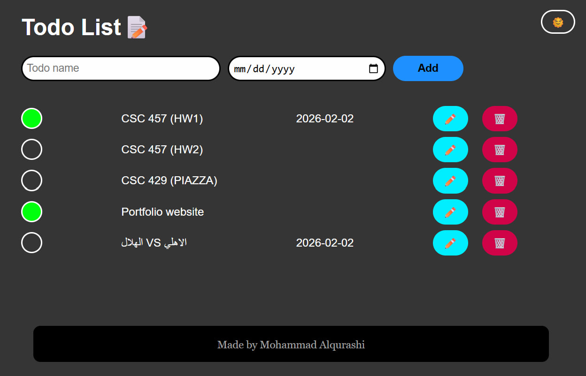

To Do List
A highly interactive, custom-styled To-Do application built with Vanilla HTML, CSS, and JavaScript. This project focuses on providing a personalized environment for managing deadlines through a clean, user-controlled interface.
- Theme Customization: Includes a fully functional Dark and Light Mode toggle, allowing users to choose the visual style that suits them best.
- Deadline Management: Features a dedicated date picker (Year/Month/Day) for each task to help track deadlines clearly.
- Enhanced UX Interactions: Dynamic Button States: Edit and Delete buttons change to a black background on hover.
- Visual Cues: The 'Add' button shifts to a yellow background on hover to guide user action.
- Interactive Cursors: Custom mouse cursor changes to provide immediate feedback on clickable elements.
- Full CRUD Logic: Built with JavaScript to allow users to Create, Read, Update, and Delete tasks seamlessly.
Key features:
